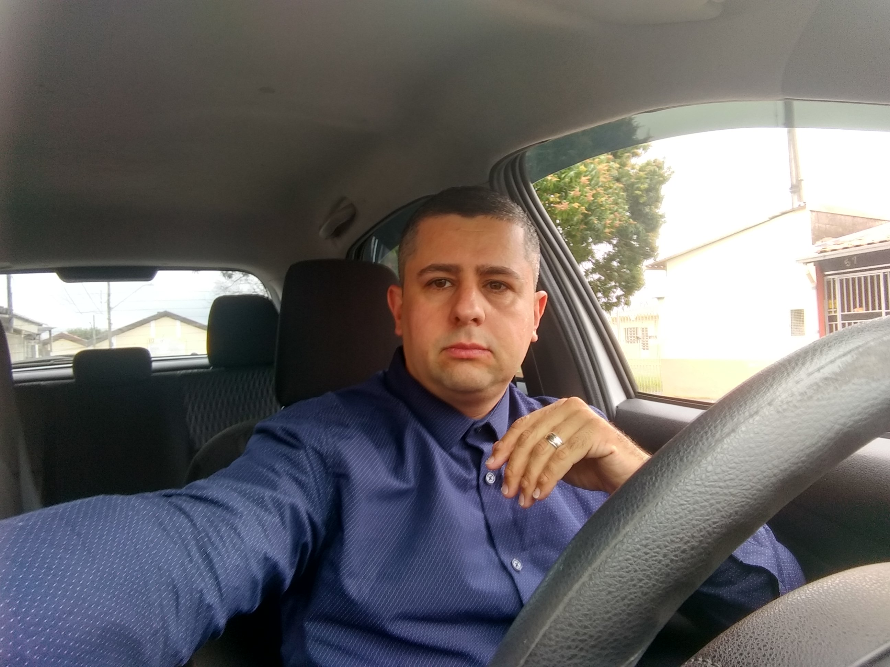

MARCOS RODOLFO MATEUS DE OLIVEIRA

Contatos:
Idiomas:
Inglês cursando –Nível Intermediário.
Instituição de ensino: CNA Unidade - Jardim Satélite SJC-SP
Formação:
- Cursando 7º semestre em Engenharia de Software - UNICESUMAR.
- Academia de Desenvolvimento em Java - SEASON Treinamentos- concluído Jan/2019.
- Gestão em Logística - Faculdade Anhanguera de Jacareí – concluído 2013.
- Técnico em Telecomunicações – ETEP – concluído 2002.
Qualificações:
- Instalação e manutenção de redes de dados e voz;
- Instalação e configuração de PABX analógicos e IP Siemens e Panasonic;
- Conhecimento em Eletrônica Digital, analógica, telefonia fixa e telefonia voip;
- Montagem e manutenção industrial;
- Atendimento Call Center vendas e suporte técnico em serviços de Internet e telefonia;
- Montagens e manutenção de Desktops e Notebooks;
- Conhecimento em Limguagem de Programação Java,Sql e Html5 ;
Experiências e Atividades:
- IT Telecom – desde 05/2010
- Técnico em telecomunicações
- Instalação e manutenção de redes de dados e voz;
- Instalação e configuração de PABX analógicos e IP Siemens e Panasonic;
- Instalação e manutenção em servidores de softwares de call centers
- Ferreira e Ferreira Comércio e Manutenção Industrial – 05/2009 a 01/2010
- Auxiliar de Serviços de Manutenção Industrial.
- Montagem e Manutenção de Esteiras e Maquinas Industriais.
- Atento Brasil S/A– 03/2004 a 10/2008
- Atendente Técnico em Telecomunicações Junior
- Atendimento ao cliente.
- Venda de produtos.
- Suporte técnico a serviços de internet e telefonia.
- ASSEMTE Instalações Telefônicas – 06/2003 a 09/2003
- Estagiário:
- Instalações e Manutenções de redes telefônicas de dados e voz;
Objetivos:
- "Quero atuar na área de desenvolvimento de softwares e afins, trabalhando em equipe com isso agregando
valor aos produtos desenvolvidos ou serviços prestados pela empresa,buscando sempre a melhoria
e otimização das praticas profissionais e evolução pessoal e profissional."